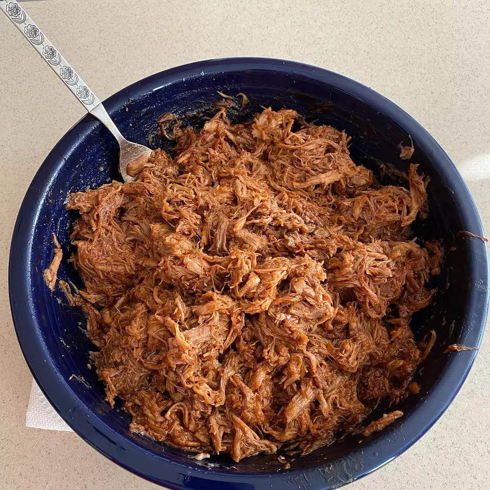

Slow Cooker Pulled Pork

Description
The easiest recipe on the site, great for anyone who likes "set and forget" recipes! Four ingredients, savory, sweet, and not demanding of your attention.
Ingredients
- 12 fl. oz. root beer
- 2 pounds of pork tenderloin
- 18 ounces of barbecue sauce (your choice!)
- 8 hamburger buns
Steps
- Place the tenderloin in a slower cooker, pouring the root beer over top. Cover and cook low for 6 to 7 hours.
- Add barbecue sauce to the mix as you approach the final hour of cooking.
- Split your buns, toast them to your content, and throw on that tenderloin!